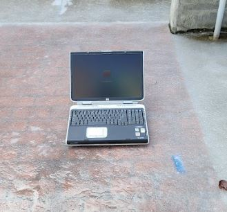

HP Pavilion zd8000 Owner's Guide
Originally written February 11, 2022. Revised August 22, 2022.
Do you own one of these "one-off" laptops and are looking for some important information on how to keep them running? Well, look no further!
Overview of the hardware
The HP Pavilion zd8000 (or the Compaq nx9600/Presario X6000) is a laptop that HP made in 2004 and 2005. (There has been a report of a zd8000 manufactured in 2007!) They were HP's top of the line "laptops" back in the day and provided... okay performance. These laptops came with a socket 775 Intel Pentium 4 chip, which makes it one of the few laptops that uses such a chip. Along with that, they provided DDR2 SDRAM, an ATI Radeon X300 or X600 graphics card on a PCI Express data bus, a 17 inch widescreen display running at either 1440x900 or 1680x1050, and various multimedia features such as DVD QuickPlay. (who even used that?)
The HP Compaq nx9600 and Presario X6000 are based on the same architecture as the zd8000, but with the exception of the overall design and slight motherboard differences. You can install a Pavilion zd8000 motherboard into an nx9600 or X6000, but the top buttons on the palmrest may not work. The Compaq X6000 and nx9600 had a much more simplified design with JBL speakers instead of harman/kardon speakers, felt somewhat less premium than the zd8000, and only came with a 64MB ATI X300 or 128MB ATI X600 graphics chip.
Sometime in March 2005, HP started to bundle these with the newer Prescott-2M stepping, which slightly reduced heat output. Allegedly, they stopped selling these with 3.6GHz chips down the line as those caused many issues with overheating. Later on that year, the zd8000 was replaced by the much cooler running Pavilion dv8000. The zd8000 was still sold alongside the dv8000 for an unknown amount of time.
Flaws of the system
As to be expected, with such hot running processors in a laptop form factor, there were serious issues inbound. Many early batches of zd8000 laptops suffered from premature failure which was mainly seen with higher end Pentium 4 chips, especially 3.6GHz units. Most higher-clocked Pentium 4s of 2004 ran at TDPs higher than 100W, which is not exactly an ideal choice for such a system. With the quiet refresh of 2005, HP used Prescott-2M chips which usually had a rated TDP of 89W. While these chips ran cooler, they still ran absurdly hot and failures were still inbound, despite the lower risk.
These laptops also suffered from failing graphics cards due to poor thermal conductivity, and lines appearing on the LCD screens. The issue with the GPU could be fixed with a copper shim and thermal paste, and the LCD lines can be fixed by replacing the screen. Most people say the graphics card causes the vertical line issue, but in reality, it's a certain batch of LCD screens that HP was a part of using. If you remember the iMac G5's issues with vertical lines, that was also caused by the display. Even with all this in mind, GPU failure is still a possibility.
Another issue was VRM failure. HP had a cooling fan for the VRM, but it was only turned on if the system was under SERIOUS load. This is a more common issue with the zd8000s using the original Prescott stepping with the florida-level TDP those chips had. HP also released, and I kid you not, 34 BIOS revisions to fix many issues with the laptop's firmware, but most people were not aware of any BIOS updates. Hey, at least it's better than the 38 revisions the Inspiron 5150 got. There isn't a known fix for this, but I would strongly recommend using a cooler chip.
Maintenance level
Unlike most laptops which have a small fan and a small cooler, this one is the exact opposite. These laptops use 3 fans, a massive copper heatsink, and 2 smaller aluminum heatsinks to cool the VRMs, chipset, and GPU. The fans are constantly running (aside from the VRM fan which runs under heavy load) and with them running for such a long amount of time, you will need to dust them out frequently. They suck in so much dust to the point where after a few days of usage, you can find some when you take apart the system. You don't need to take it apart to dust it out, but if you initially acquired yours and it's clogged, you do. You will need to take it apart to keep the thermals adequate; replace the thermal pad for the GPU with a copper shim and thermal paste. You should definitely apply new thermal paste to the CPU, as that is the component which runs the hottest. In short, these laptops can be very high-maintenance and require fresh thermal interface material.
Processor upgrades
You can install a Prescott CPU from 2004 (which I do NOT recommend) or a Prescott-2M CPU from 2005. Unfortunately, HP made their last BIOS update for the zd8000 on September 20, 2005, so Cedar Mill is not an option. I have tried looking for compatible BIOSes to get the support in, but it turns out the issue is the PhoenixBIOS the laptop uses which doesn't exactly play nice with Cedar Mill. I was told I could isolate pin J2, but that didn't work. If anyone manages to get a Cedar Mill CPU to work, please hit me up.
I would recommend the Intel Pentium 4 HT 650 for the best performance, or the Intel Pentium 4 HT 630 for the best temps. As much as we'd all love for Cedar Mill to be a more universal platform for 775, that never exactly happened, unfortunately.
Storage, RAM, Power, and Wi-Fi
For a storage drive, I would recommend an mSATA or M.2 SATA to 44-pin IDE adapter with any legitimate mSATA/M.2 SATA SSD of your choice.
The unofficial max RAM for these computers is 2.5GB. Some people got 3GB to work with a modded BIOS, but some laptops do not take anything past 2.5GB.
I recommend the Mini-PCI Atheros AR5008 Wireless-N card. This requires a whitelist-free BIOS (which I also have, and applied the RAM patch to for the lucky ones who can get 3GB working). I pulled mine out of an old AirPort base station.
Use the DR911A charger. If you find chargers by their part number, they can be cheaper to find. As for batteries, you can go with a 6600mAh DP390A Replacement Battery, but usually those are dead on arrival. You would be very lucky to find a replacement battery that works. You have better luck with generic batteries, too. Not exactly the best idea, but at least they have a chance of working. The battery is best used just to move it around for a short amount of time either in sleep mode or in a low-load state. I do NOT recommend running these on straight up battery power for extended periods of time. Pack a charger with you, no matter what laptop you use.
Operating system
For these systems, I recommend a 32-bit OS of your choice. Windows XP Professional originally came with these, but if you're crazy like me and want to bring one of these to the modern world, you can install Windows Vista, 7, 8.1, or even 10. It can be hard to get adequate drivers for the X300 and X600 cards, but the Microsoft Update Catalog has them. I am writing this on a 3.4GHz P-2M/256M X600 HP Pavilion zd8000 running Windows 7 Professional SP1 32-bit. This is best for application support, but XP is best for performance. Ideally, you'd use this as a computer to run old programs on, so modern usage is well known to be an issue.
Any form of x86-32 GNU+Linux is also a viable option, provided you can find suitable video drivers for ye olde R300 graphics cores. There has been an updated driver that is in the works, but I have not tested it and I am not sure if it's even out yet. My knowledge on these distros has been very flaky since I stopped maining Arch ages ago. Why? I'm not a no-lifer.
As for a hackintosh, there are old distros like iDeneb, Kalyway, JaS, etc. But at that rate, get a white MacBook or an old PowerPC Mac from the era. A laptop like the zd8000 would make for an overcomplicated hackintosh.
Conclusion
The Pavilion zd8000, the Compaq nx9600, and Compaq X6000, are a set of what HP thought a high-performance laptop would be. It merely ended up as one of the most infamous HP laptops in history, and was very much HP's "Ultimate one-off of the mid-2000s". HP never attempted to make another laptop with the 775 socket; imagine what would be the Pavilion zd9000, an absolute disaster with a Pentium D processor and ATI X700 graphics. The dv8000 was a worthy successor despite a very rough start with ATI GPUs. Down the line when the dv8000 was given a dual-core processor and an nVIDIA Go 7400, most of those units ran faster than the zd8000 systems that came before it, and were so much more reliable.
Today, there isn't much of a cult following with the zd8000, but they are rare to find in working condition. Look out for untested units made in 2005. Most working ones go for a few hundred dollars on eBay, and most non-working ones go for around $60. Compaq X6000s and nx9600s are even harder to find, and I don't even have a baseline for them. For "collector's value", working laptops of all 3 models are worth about a couple hundred US dollars, and maybe a little more in mint condition. Personally, I don't pay collector's price, but I do buy salvage off of eBay occasionally. That's how I got this one.
The zd8000 is a laptop you really want to own if you're a collector of obscure and strange laptops. It signified how Intel's roadmap for mobile computing was not a great plan with how hot their processors ran. It was the source of the many issues that users had. It was the reason why HP never bothered using a desktop CPU in a laptop ever again. Unfortunately, they are very hard to find and even harder to find if they work. They are very temperamental with the high-power hardware that was used to power the system. If you find one for a good price as-is with no major defects, consider yourself lucky. It's easy to keep it running...
...as long as you prevent it from overheating.
